|
|
|
There is a special symbolistic used for SEP (regardless their rank), because this type of process is the basis (element) of all the other processes, otherwise speaking, any process, no matter how complex it is, may be decomposed into this kind of elementary processes. According to the visual syntax, both literal but mostly graphical, this kind of symbol used for SEP’s graphical representation is the vector.
This symbol is a graphical substitute for an even attribute variation, that is a variation between two states: initial and final (corresponding with the two boundaries of the support interval). The two states are represented by two points whose positions are the attributes of the two state objects, and between them, there is a right-oriented segment which denotes the state’s even variation. Oriented segment means that a certain direction was imposed (symbolized by the arrow direction), direction which shows a positive variation between the initial and final state. The size (length) of the right-oriented segment is proportional to the amount of variation between the two states (variation’s amplitude)16.
Depending on the information contained in the vector object, we shall have many types of such objects, whose denominations are already known in the scientific literature, but their approach method is a little bit different as compared to the method used in the present paper:
Free vectors, for which only the amount (module), sense and direction of the variations are known, the initial and final states being non-determined;
Bound vectors, for which the initial invariant state is known (vector’s application point), module and direction of the state variation;
Carrier vectors (or slide vectors, according to some references), with the same attributes as the bound vectors, the difference consisting in the initial state which is variable.
Most of the vectors used in the vectorial calculus and in the vector fields theory from mathematics are free vectors. Subject matters such as Materials Strength or Hydrostatics operate with vector distributions with bound vectors, but there is also another important class of such vectors in mathematics and physics - the position vectors (bound by the origin of RS). The carrier vectors shall be the class of vectors used in the present paper as mathematic model for fluxes.
One may observe that when defining the vector-type objects, as well as of the substituted SEP, a new attribute occurs - that is the direction. This attribute is very important for SEP representation, therefore, it shall be minutely analyzed later on in this paper.
Fig. 4.4.1
The figures 4.4.1 and 4.4.2 shows a representation in the visual-graphical syntax of SEP (vectors) in two special cases:
When the variable attribute has a single qualitative component, in our case, it is X from the figure 4.4.1, attribute which is also called as one-dimensional. The values domain (domain of the existential attribute) of this qualitative attribute is a segment from the set (virtual or realizable, see annex X.3) of the real numbers {R}. An even variation of the value of this attribute means an even, successive covering of all the values from its values domain, running from an initial to a final value. The restriction that all these covered values to be included in a one-dimensional domain makes that this kind of running-through to have only two distinct attributes: positive sense (considered as the increasing one, which means that the value of the final state to be higher than the one of the initial state) and the negative sense (reverse situation). This attribute - that is the sense - characteristic for the specific processes with an one-dimensional attribute (1D), can have therefore only two values (+ or -). We may notice that the sense of a variation, represented by its sign can be independent from the actual values of the two states (initial and final), but it is important only that the difference between them to have the required sign. This case is typical for the free vectors, as in the example from the figure 4.4.1 rX1. The situation is different if the initial state is settled, in this case, the value xR. In such a situation, we are dealing with a new abstract object, that is the direction, for the one-dimensional case with only two possible values, corresponding to the two possible senses of the variation against the reference xR (vectors -rX2 and +rX2 displayed in the figure 4.4.1). We shall see next that there is a way of defining the direction in a much more accurate manner in case of the multidimensional vectors.
When the variable attribute has two qualitative independent components (see definition 2.1.2), in this case, X and Y from the figure 4.4.2, attribute which is also called as two-dimensional. In this case, it may be noticed that a certain SEP of the attribute r(X,Y) is composed from two independent SEP (simultaneous and one-dimensional) rX and rY. These components are determined against a common reference (origin of axes O), each of them having the direction of the axis in which they are included (as we have seen in case 1) which is settled in relation to this reference. We may also assert that a variation r (an absolute one in case given in the figure 4.4.2) of a compound two-dimensional object is the result of the two independent variations (also absolute) and each of them contribute in a certain extent to the total variation. The two components from the figure 4.4.2 display even these contributions (also known as projections).
Fig. 4.4.2
In case that the compound attribute is the spatial position and by considering the analytical geometry, we know about the existence of some invariant relations between the module of vector r (total attribute variation) and the components modules (of projections) along the two axes: 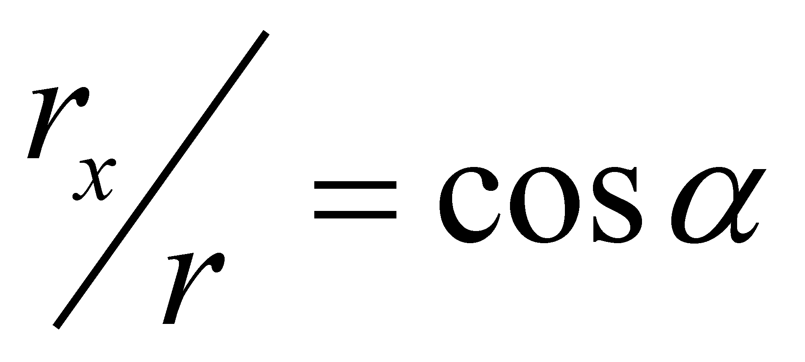, 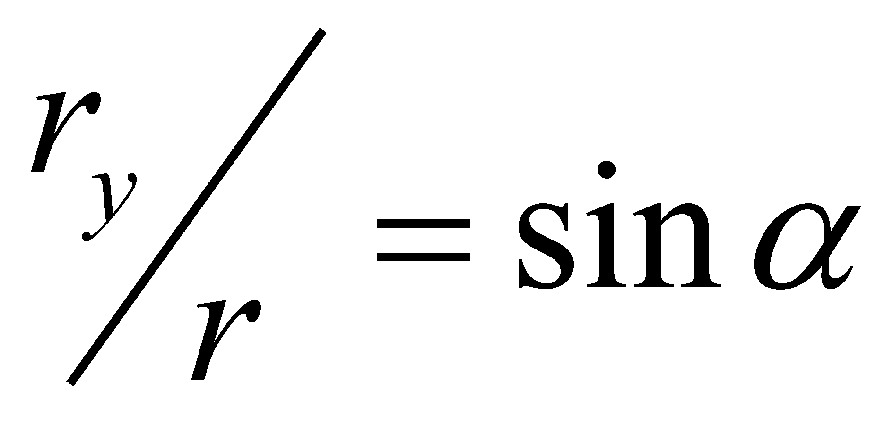. But, by taking into account the issues described in chapter 2, the amounts :
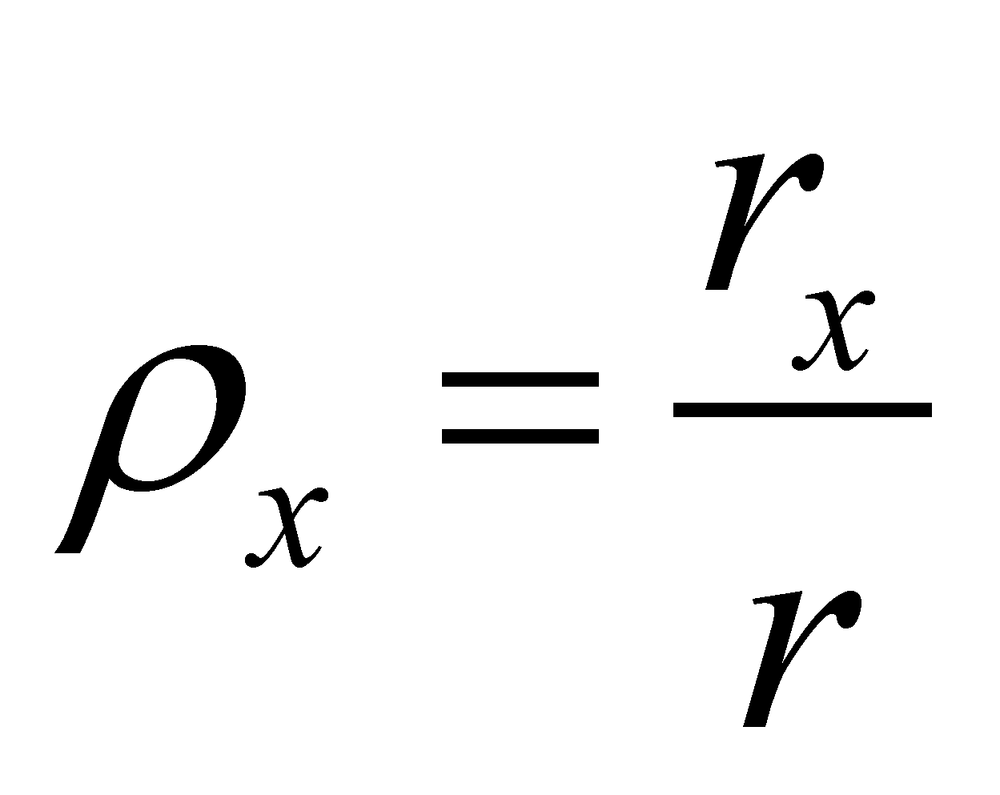 (4.4.1.a)
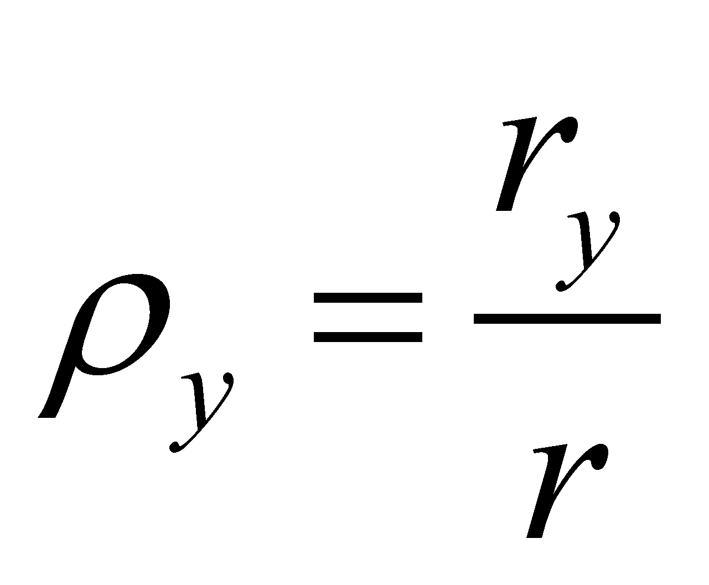 (4.4.1.b)
are at the same time densities of some even variations (absolute) of the components, on the common support - total variation (density values of the specific variations distributions over the total variation).
Definition 4.4.1: Numerical direction (synonym - unit vector, versor) of a two-dimensional vector vV against a bidirectional reference system X, Y is the abstract object made-up from the weight factor of the contributions provided by its independent components to the unit module variation:
V = {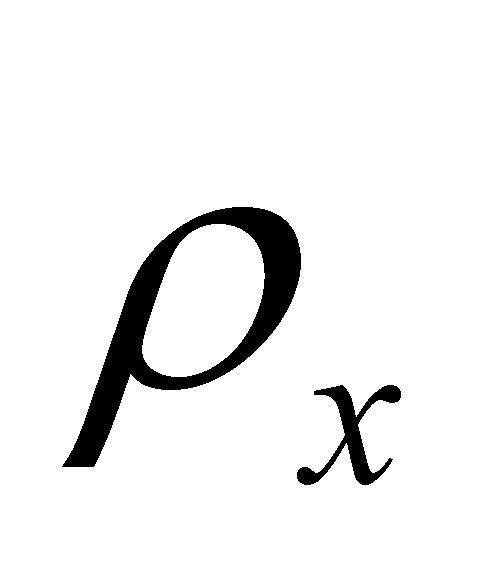X , 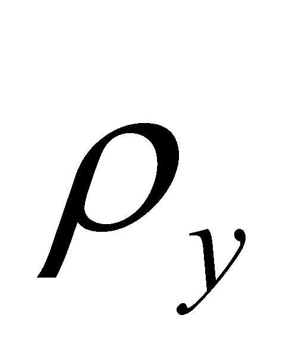Y} (4.4.2)
According to this definition, the numerical directions (unit vectors, versors) of the axes of reference are X={1,0} and Y={0,1}. Definition 4.4.1 is also consistent for the 3D case, by adding obviously the component 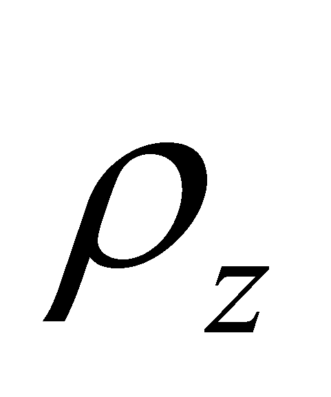 against the axis with direction Z. It may be noticed that in case of an one-dimensional attribute, the total variation is identical with the component’s variation, therefore, the density 4.4.1 is equal to one and the contribution to the variation of another amount is null. This is the specific case of the axes of reference. The existential attribute (module) of the unit vector is equal to one, that is the reason why it was not mentioned in relation 4.4.2. Between the components and occurs the following known relation:
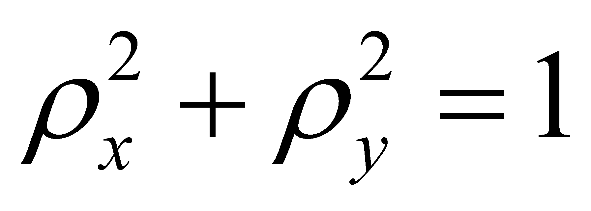 (4.4.3)
In practice, the direction of an unit vector is mostly determined by means of a solution of the equation 4.4.3, that is the above-mentioned 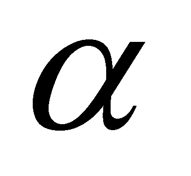, given by the following relations:
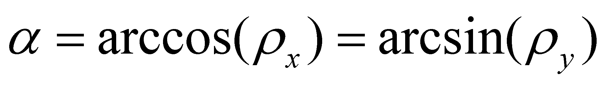 (4.4.4)
and which is another type of existential attribute of one vector’s direction against reference X. The amount from the relation 4.4.4 is the angular direction of the vector in relation to the axis of reference.
Comment 4.4.1: The components of the numerical direction defined in relations 4.4.1, as a ratio between two linear variations (two P1-type processes) are clearly dimensionless (that is why they were called numerical). The angular direction are defined in mathematics field as the ratio between the length of a circular arc (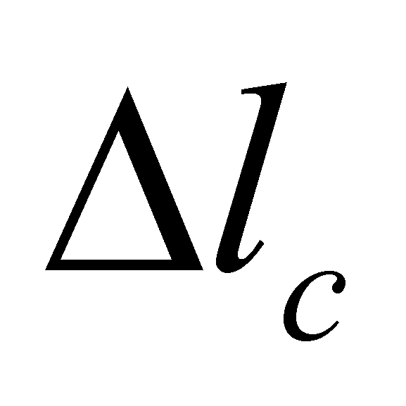from the figure 4.4.2) and its radius, fact which made the mathematicians to assert that the angle is dimensionless (that is also a number). However, the process analysis of the two involved abstract processes - circular arc and the radius of that circle - tells us something else. The circle radius is a right segment, therefore, a P1 process, as we have seen so far, but the circular arc is a P2 process. The reader is invited to decide by himself if the ratio between two processes of different ranks is dimensionless or not.
By using the concepts which were already introduced in the previous chapter, such as common and specific (differential) components of a compound object, we may observe that the variation rX is the common component between the vector r and the axis of reference X (axis against whom the angular direction is evaluated). This common element of two concurrent SEP (with the same initial state), out of which one of them is considered to be a reference, is the current SEP projection along the reference direction.
Definition 4.4.2: The common component of two concurrent vectors vV and vRVR between which there is an angular direction difference against the reference direction VR, a vector vCVR given by the following relation:
vCVR = C(vRVR , vV) = v cosVR (4.4.5)
According to the relation 4.4.5, the symbolic function C() is the one described in paragraph 3.4 and which generally represents the extraction function of the common component from a set of abstract objects, objects which are the function’s arguments. In case of the compound object r, the common component between the vector r and the axis with the reference direction X is:
rX = r cosX (4.4.6)
that is the projection of vector r along this axis17.
SEP r has another component rY along the direction of the independent Y axis, that is also a SEP but which has in common with the axis of reference only the intersection point, that is origin O, therefore, it is a disjoint (specific) component of vector r against the axis of reference X.
Definition 4.4.3: The specific (differential) component of a vector vV concurrent with a reference vector vRVR between which there is an angular direction difference α against the reference direction VR, a vector vD (VR+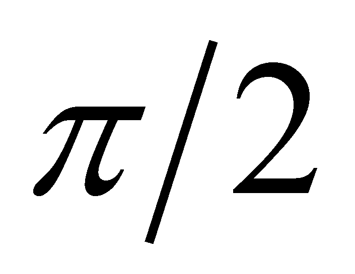) given by the following relation:
vD (VR +)= D(vRVR , vV) = v sin(VR+ ) (4.4.7)
The function D() from the relation 4.4.7 is the extraction function of the specific components of an abstract object against the common component of a set to which that particular object belongs to (function which was also mentioned in paragr.3.4). The positive sense of the direction variation is the trigonometric positive sense, also against the reference direction of axis X from the figure 4.4.2.
Comment 4.4.2: The relation 4.4.7 is a consequence of a law which shall be approached in chapter 9, but it was already briefly mentioned in the previous chapter, according to whom, the properties of an object which belongs to a set of objects are made-up from two united classes of properties: common properties to all the set’s objects, and specific properties to each object. Otherwise speaking, in case of a vector against a direction reference VR, we might say that the vector object is the union (sum) of the two component types:
V = VC + VD (4.4.8)
But we know that the two components of a vector which comply with the relation 4.4.8 must be orthogonal one another (that is independent). This is the reason for which the common component of a concurrent set of vectors is normal on a plane which includes their specific components (against the common component). A more detailed discussion on this matter may be found in annex X.15 and X.17.
The disjoint component of a vector against the same reference direction shall have (in case of a 3D space) its direction included in a normal reference plane (that is also a vector projection but on a normal plane along the reference direction). A relevant property of the common and specific components of a vector against the concurrent reference vector is that all these vectors are coplanar. The discussion on a two-dimensional SEP may be extended in the same way to the three-dimensional vectors, by adding obviously the component after the axis Z, but the issue is more complex and it is not the subject of this section, because its scope is to enlighten the reader on the correspondence between a vector and a SEP.
We cannot end this short description of the vector representation for SEP without making a specification. All SEP may be represented by means of vectors, but not all the vectors represent SEP, more exactly, there are vectors which represent only reference directions, without representing state variations as well. Such a category of vectors are the versors of the axes which were briefly above-mentioned, but also the ones which make-up the local R references of a curve or of a spatial surface, which are the tangent, normal and binormal. These vectors do not represent SEP but only reference directions which are valid in their application point.
16 It is worth keeping in mind that in case of a realizable SEP, there is no restriction imposed regarding their amount (magnitude), the only condition to fulfill is the evenness of their density along the support interval, and that is because an even distribution is an elementary distribution.
17 Attention! In this paper, the projections of a vector are vectors too, because the components of a vector are also vectors. This specification is made because the relation 4.4.5 may be mistaken with the dot product between vector r and axis X; the projection module is indeed equal to the dot product, but the vector is oriented on the axis direction.
Copyright © 2006-2011 Aurel Rusu. All rights reserved.